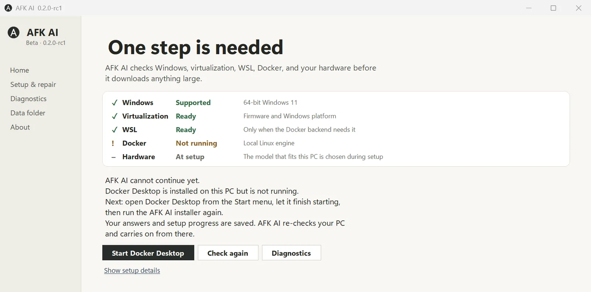

AFK AI
Local AI for Windows, without the plumbing becoming the product.
AFK AI checks the PC, sets up the runtime and a model, and starts chat on this machine. When something is missing it names the one next step, and it refuses to touch containers it cannot prove it owns.
- Status
- Beta · 0.2.0-rc1 prerelease
- Runs on
- Windows 11 x64
